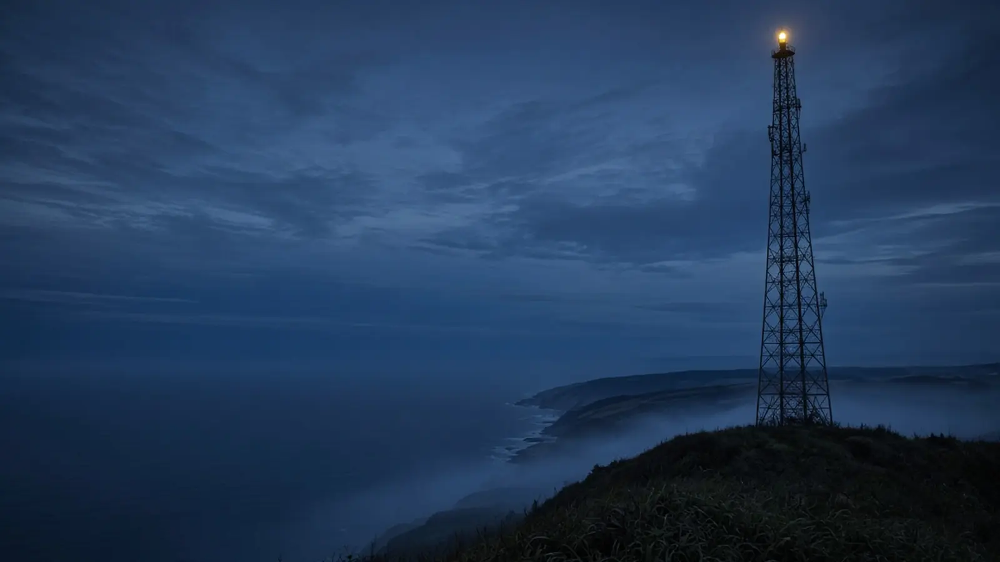
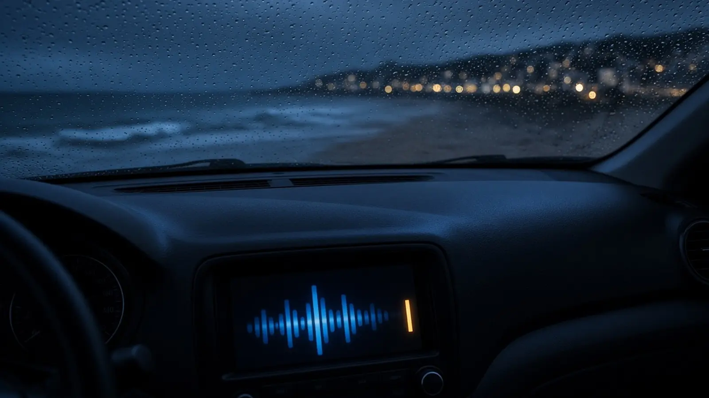
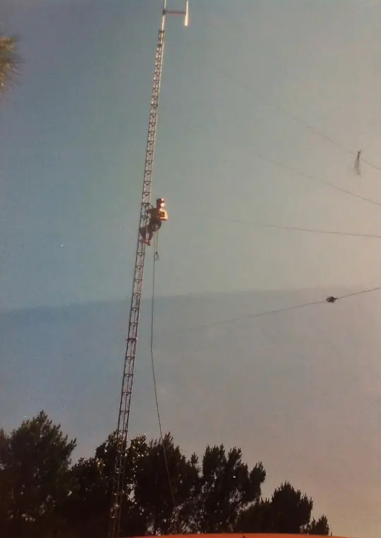

FM · DAB+ · Web
Nous capter
En voiture, à la plage ou à l'autre bout du monde : la bonne onde pour écouter Surf FM.
Couverture
Des Landes au Pays basque
Zones dessinées à titre indicatif. Pour savoir si votre commune reçoit Surf FM en DAB+, consultez la carte officielle de l'Arcom.
Carte Ma Radio DAB+ de l'ArcomFM ou DAB+
Même radio, deux signaux
Glissez le curseur : la FM analogique grésille selon la distance et le relief, le DAB+ numérique reste net tant que le signal est reçu.
| FM | DAB+ | |
|---|---|---|
| Transmission | Analogique | Numérique |
| Fréquences | 87,5 à 108 MHz | Bande III, 174 à 240 MHz |
| Qualité du son | Varie avec la distance, le relief et les interférences | Constante tant que le signal est reçu |
| Capacité | Une radio par fréquence | Plusieurs radios par multiplex |
| À l'écran | Nom de la station et texte (RDS) | Images, guide des programmes, infos texte |
| Récepteur | Tous les postes | Un poste compatible DAB+ |
D'après l'article « Comprendre la différence entre la radio FM et la radio numérique terrestre » publié sur surffm.fr le 30 juin 2024.

Régler son poste DAB+
Quatre gestes
- 1
Vérifier le logo DAB+
Sur le poste ou l'autoradio, cherchez la mention DAB+ ou une touche « DAB ».
- 2
Lancer une recherche
Choisissez la recherche automatique des stations (scan) en mode DAB+.
- 3
Choisir Surf FM
Sélectionnez Surf FM dans la liste, puis enregistrez-la en favori.
- 4
Pas de signal ?
Vérifiez votre commune sur la carte de l'Arcom, rapprochez le poste d'une fenêtre, ou écoutez le direct sur ce site.
Questions
Bon à savoir

Pourquoi Surf FM n'est-elle pas en FM toute l'année ?
En 2015, l'autorisation FM délivrée à Surf FM ne couvrait que la période d'avril à octobre, et les demandes de diffusion à l'année avaient été refusées. Situation actuelle à confirmer.
Faut-il un nouveau poste pour le DAB+ ?
Oui, il faut un récepteur compatible DAB+. Beaucoup de postes récents et d'autoradios reçoivent à la fois la FM et le DAB+.
Le DAB+ remplace-t-il la FM ?
Non, il la complète. La bande FM est saturée : le DAB+ permet de diffuser plus de radios, avec un son constant.
Peut-on écouter Surf FM depuis l'étranger ?
Oui, le direct est disponible sur ce site, avec le lecteur en bas de l'écran.
Comment signaler un problème de réception ?
Écrivez à contact@surffm.fr en indiquant votre commune, votre poste et le mode d'écoute (FM, DAB+ ou web).